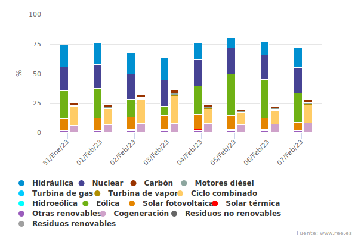
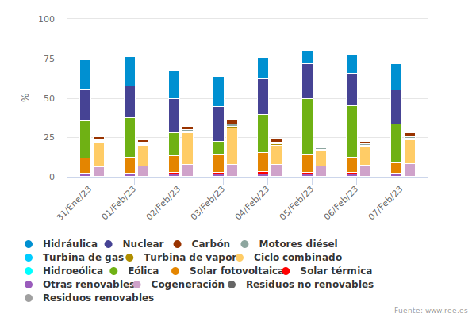

Antes de abordar el tema de por qué las energías renovables son importantes, es importante hacer una breve introducción al contexto actual de la energía.
En la actualidad, la mayor parte de la energía utilizada en el mundo proviene de combustibles fósiles, como el petróleo, el gas natural y el carbón.
Las energías ventajas de las energias renovables son:
- Al no producir gases de efecto invernadero (GEI) no contribuyen al calentamiento global y por eso es el origen para la reducción del CO2.
- Además ayudan a garantizar un buen futuro a las nuevas generaciones
- Son una fuente inagotable de energía
- Tienen un impacto ambiental mucho menor que los combustibles fósiles
- No requieren grandes extensiones de terreno para su instalación.
- Mejoran la calidad del aire y la salud pública al reducir la contaminación y la emisión de partículas nocivas.
La importancia de las energías renovables permite visualizar cuáles son las ventajas de gozar de las mismas y desarrollarlas
eficientemente. Tanto para la sociedad como para el planeta son un factor determinante para obtener mejores condiciones sanitarias
y ambientales.
El crecimiento de las energías renovables es imparable, como queda reflejado en las estadísticas aportadas anualmente por la Agencia
Internacional de la Energía (AIE): Según las previsiones de la AIE, la participación de las renovables en el suministro eléctrico global pasará
del 26% en 2018 al 44% en 2040, y proporcionarán 2/3 del incremento de demanda eléctrica registrado en ese período, principalmente a través de
las tecnologías eólica y fotovoltaica.
Además, si se diversifican las fuentes de energía, se reduce la vulnerabilidad a interrupciones o aumentos de precios en una sola fuente de energía. La dependencia de una sola fuente de energía puede ser
una debilidad en términos de seguridad energética.
Es importante destacar que las energías renovables tienen un impacto positivo en la economía, ya que promueven el desarrollo de nuevas tecnologías y la creación de empleos en sectores relacionados con la generación y distribución de energía limpia.
Las inversiones en energías renovables también atraen capitales extranjeros y mejoran la balance de pagos de los países que las desarrollan.
Impacto en la economía
Asimismo, los costos de las tecnologías renovables están disminuyendo constantemente, lo que las hace más accesibles y competitivas en comparación con los combustibles fósiles. Además, a diferencia de los combustibles fósiles que tienen precios volátiles
y dependen de factores geopolíticos, las energías renovables son una fuente de energía más estable y predecible en términos de costos.
Por otro lado, las energías renovables también ofrecen oportunidades de inversión a largo plazo, ya que los proyectos relacionados con energía limpia tienen una vida útil prolongada y una rentabilidad atractiva.
En resumen, el desarrollo de las energías renovables es una oportunidad para mejorar la economía a nivel local, nacional e internacional.
En resumen, es importante discutir el papel de las energías renovables porque contribuyen a un futuro más sostenible y respetuoso con el medio ambiente.
Educación
La educación y concientización sobre energías renovables es importante para fomentar una cultura de consumo responsable y sostenible en la sociedad.
Al conocer los beneficubrimientos y avances tecnológicos en este campo, las personas pueden tomar decisiones informadas sobre cómo consumir energía de manera más eficiente y sostenible.
Además, una mayor conciencia sobre la importancia de las energías renovables puede impulsar el desarrollo de soluciones innovadoras y el apoyo político para una transición energética más sostenible.
También es importante mencionar que la educación sobre energías renovables no solo es relevante para las personas como consumidores, sino también para aquellos que trabajan en la industria energética.
Una formación adecuada en energías renovables puede ayudar a impulsar el desarrollo de nuevas tecnologías y a fomentar una economía verde, lo que puede tener un impacto positivo en el crecimiento económico y la creación de empleo en todo el mundo.
 
